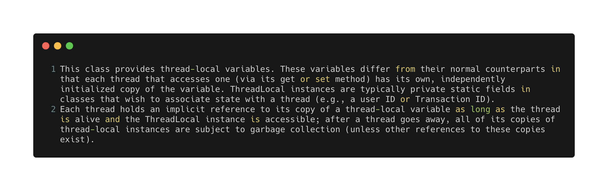
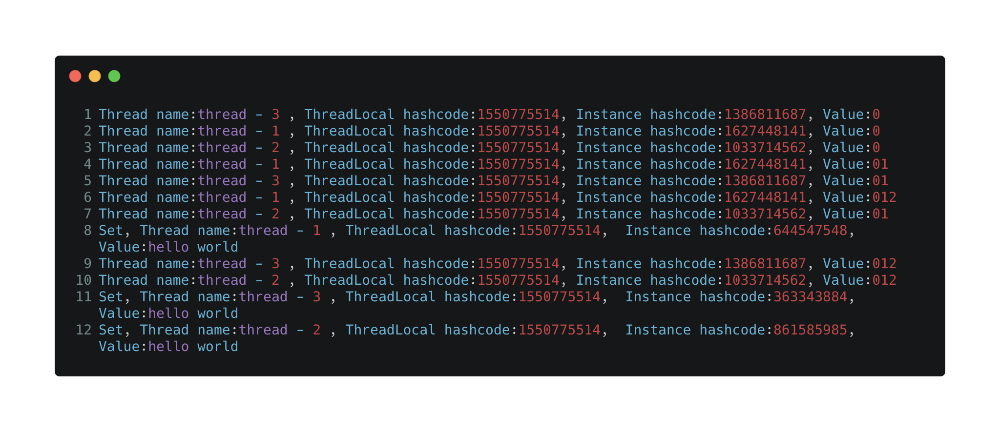
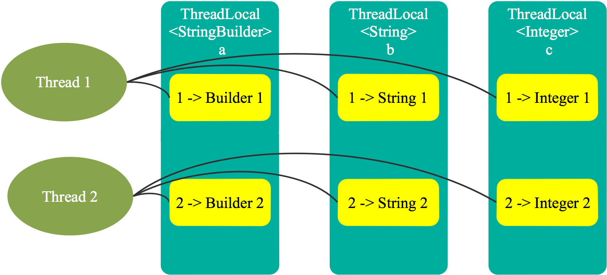
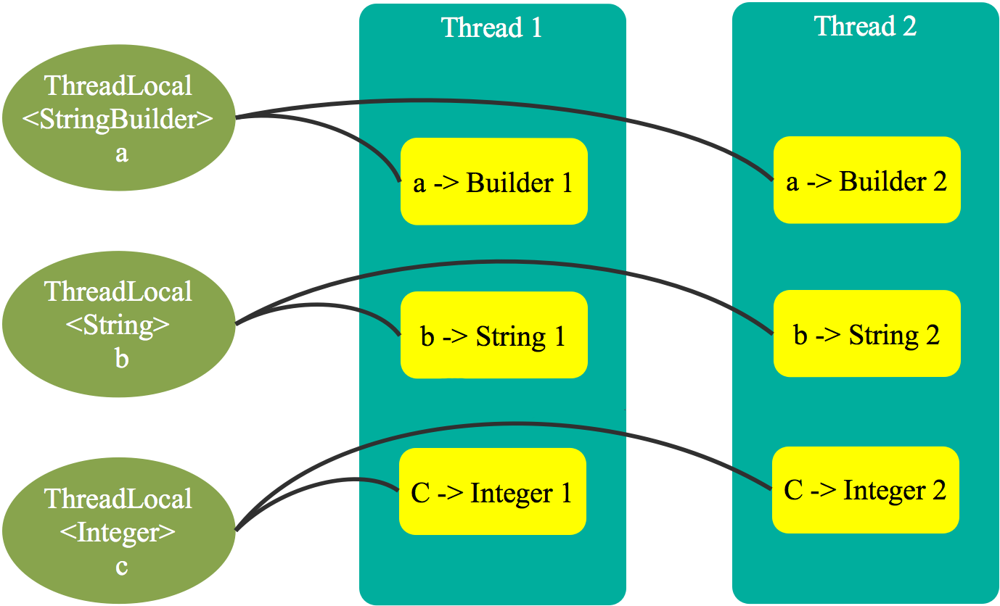

小明所在的项目组（迭代组：一直在迭代的路上），经常会在已有接口的基础上开发一些小功能，并且前提是在保证现有用户的不受影响基础上迭代。功能迭代，在代码层面小明有1w种实现方法（吹牛的），一起来看看这次小明如何使用ThreadLocal优雅地完成本次迭代吧！
由于 ThreadLocal 支持范型，如 ThreadLocal< StringBuilder >，为表述方便，后文用 变量 代表 ThreadLocal 本身，而用 实例 代表具体类型（如 StringBuidler ）的实例。
写这篇文章之前，小明就在网上看了很多博客关于 ThreadLocal 的适用场景以及解决的问题，描述的都并不是很清楚，甚至误人子弟的。比如下面是常见对于 ThreadLocal的介绍（wrong）
ThreadLocal为解决多线程程序的并发问题提供了一种新的思路；
ThreadLocal的目的是为了解决多线程访问资源时的共享问题。
在小明大量阅读和动手实验后得出结论：ThreadLocal 并不是像上面所说为了解决多线程 共享变量的问题。
ThreadLoal 变量，它的基本原理是，同一个 ThreadLocal 所包含的对象（对ThreadLocal< StringBuilder >而言即为 StringBuilder 类型变量），在不同的 Thread 中有不同的副本（实际上是不同的实例）:
官方文档是这样描述的：

我看完之后，得出这样的结论
ThreadLocal 提供了线程本地的实例。它与普通变量的区别在于，每个使用该变量的线程都会初始化一个完全独立的实例副本。ThreadLocal 变量通常被
private static修饰。当一个线程结束时，它所使用的所有 ThreadLocal 相对的实例副本都会被回收。
因此ThreadLocal 非常适用于这样的场景：每个线程需要自己独立的实例且该实例需要在多个方法中使用。当然，使用其它方式也可以实现同样的效果，但是看完这篇文章，你会发现 ThreadLocal 会让实现更简洁、更优雅！
我们通过下面的代码，先做个示例，然后分析一下现象，得出一个结论：
public class ThreadLocalDemo {
public static void main(String[] args) throws InterruptedException {
int threadNum = 3;
CountDownLatch countDownLatch = new CountDownLatch(threadNum);
for (int i = 1; i <= threadNum; i++) {
new Thread(() -> {
for (int j = 0; j <= 2; j++) {
MyUtil.add(String.valueOf(j));
MyUtil.print();
}
MyUtil.set("hello world");
countDownLatch.countDown();
}, "thread - " + i).start();
}
countDownLatch.await();
}
private static class MyUtil {
public static void add(String newStr) {
StringBuilder str = StringBuilderUtil.stringBuilderThreadLocal.get();
StringBuilderUtil.stringBuilderThreadLocal.set(str.append(newStr));
}
public static void print() {
System.out.printf("Thread name:%s , ThreadLocal hashcode:%s, Instance hashcode:%s, Value:%s\n",
Thread.currentThread().getName(),
StringBuilderUtil.stringBuilderThreadLocal.hashCode(),
StringBuilderUtil.stringBuilderThreadLocal.get().hashCode(),
StringBuilderUtil.stringBuilderThreadLocal.get().toString());
}
public static void set(String words) {
StringBuilderUtil.stringBuilderThreadLocal.set(new StringBuilder(words));
System.out.printf("Set, Thread name:%s , ThreadLocal hashcode:%s, Instance hashcode:%s, Value:%s\n",
Thread.currentThread().getName(),
StringBuilderUtil.stringBuilderThreadLocal.hashCode(),
StringBuilderUtil.stringBuilderThreadLocal.get().hashCode(),
StringBuilderUtil.stringBuilderThreadLocal.get().toString());
}
}
private static class StringBuilderUtil {
// ThreadLocal 变量通常被 private static 修饰
private static ThreadLocal<StringBuilder> stringBuilderThreadLocal = ThreadLocal.withInitial(() -> new StringBuilder());
}
}ThreadLocal本身支持范型，比如该例使用了 StringBuilder 类型的 ThreadLocal 变量。可通过 ThreadLocal 的 get() 方法读取 StringBuidler 实例，也可通过 set(T t) 方法设置 StringBuilder。
tips:CountDownLatch类位于java.util.concurrent包下，利用它可以实现类似计数器的功能。比如有一个场景：任务A，它要等待其他4个任务执行完毕之后才能执行，此时就可以利用CountDownLatch来实现这种功能了。下次，我们可以单独聊聊这一个功能。
点击运行，控制台输出结果

我们可以发现：
我们大胆猜想一下，既然每个访问 ThreadLocal 变量的线程都有自己的一个“本地”实例副本。一个可能的方案是 ThreadLocal 维护一个 Map，Key 是当前线程，Value是ThreadLocal在当前线程内的实例。这样，线程通过该 ThreadLocal 的 get() 方案获取实例时，只需要以线程为键，从 Map 中找出对应的实例即可。该方案如下图所示

这个方案可以满足上文提到的每个线程内部都有一个ThreadLocal 实例备份的要求。每个新线程访问该 ThreadLocal 时，都会向 Map 中添加一个新的映射，而当每个线程结束时再清除该线程对应的映射。But，这样就存在两个问题：
线程安全问题是JDK 未采用该方案的一个主要原因。
上面这个方案，存在多线程访问同一个 Map时可能会出现的同步问题。如果该 Map 由 Thread 维护，从而使得每个 Thread 只访问自己的 Map，就不存在这个问题。该方案如下图所示。

该方案虽然没有锁的问题，但是由于每个线程在访问ThreadLocal 变量后，都会在自己的 Map 内维护该 ThreadLocal 变量与具体实例的映射，如果不删除这些引用（映射），就有可能会造成内存泄漏的问题。我们一起来看一下Jdk8是如何解决这个问题的。
在该方案中，Map 由 ThreadLocal 类的静态内部类 ThreadLocalMap 提供。该类的实例维护某个 ThreadLocal 与具体实例的映射。与 HashMap 不同的是，ThreadLocalMap 的每个 Entry 都是一个对 Key 的弱引用，这一点我们可以从super(k)可看出。另外，每个 Entry 中都包含了一个对 Value 的强引用。
static class Entry extends WeakReference<ThreadLocal<?>> {
/** The value associated with this ThreadLocal. */
Object value;
Entry(ThreadLocal<?> k, Object v) {
super(k);
value = v;
}
}之所以使用弱引用，是因为当没有强引用指向 ThreadLocal 变量时，这个变量就可以被回收，就避免ThreadLocal 因为不能被回收而造成的内存泄漏的问题。
但是，这里又可能出现另外一种内存泄漏的问题。ThreadLocalMap 维护 ThreadLocal 变量与具体实例的映射，当 ThreadLocal 变量被回收后，该映射的键变为 null，该 Entry 无法被移除。从而使得实例被该 Entry 引用而无法被回收造成内存泄漏。
注意：Entry是对 ThreadLocal 类型的弱引用，并不是具体实例的弱引用，因此还存在具体实例相关的内存泄漏的问题。
我们来看一下ThreadLocal获取实例的方法
public T get() {
Thread t = Thread.currentThread();
ThreadLocalMap map = getMap(t);
if (map != null) {
ThreadLocalMap.Entry e = map.getEntry(this);
if (e != null) {
@SuppressWarnings("unchecked")
T result = (T)e.value;
return result;
}
}
return setInitialValue();
}当线程获取实例时，首先会通过getMap(t)方法获取自身的 ThreadLocalMap。从如下该方法的定义可见，该 ThreadLocalMap 的实例是 Thread 类的一个字段，即由 Thread 维护 ThreadLocal 对象与具体实例的映射，这一点与上文分析一致。
ThreadLocalMap getMap(Thread t) {
return t.threadLocals;
}获取到 ThreadLocalMap 后，通过map.getEntry(this)方法获取该 ThreadLocal 在当前线程的 ThreadLocalMap 中对应的 Entry。该方法中的 this 即当前访问的 ThreadLocal 对象。
如果获取到的 Entry 不为 null，从 Entry 中取出值即为所需访问的本线程对应的实例。如果获取到的 Entry 为 null，则通过setInitialValue()方法设置该 ThreadLocal 变量在该线程中对应的具体实例的初始值。
设置初始值方法如下
private T setInitialValue() {
T value = initialValue();
Thread t = Thread.currentThread();
ThreadLocalMap map = getMap(t);
if (map != null)
map.set(this, value);
else
createMap(t, value);
return value;
}该方法为 private 方法，无法被重载。
首先，通过initialValue()方法获取初始值。该方法为 public 方法，且默认返回 null。所以典型用法中常常重载该方法。上例中即在内部匿名类中将其重载。
然后拿到该线程对应的 ThreadLocalMap 对象，若该对象不为 null，则直接将该 ThreadLocal 对象与对应实例初始值的映射添加进该线程的 ThreadLocalMap中。若为 null，则先创建该 ThreadLocalMap 对象再将映射添加其中。
这里并不需要考虑 ThreadLocalMap 的线程安全问题。因为每个线程有且只有一个 ThreadLocalMap 对象，并且只有该线程自己可以访问它，其它线程不会访问该 ThreadLocalMap，也即该对象不会在多个线程中共享，也就不存在线程安全的问题。
除了通过initialValue()方法设置实例的初始值，还可通过 set 方法设置线程内实例的值，如下所示。
public void set(T value) {
Thread t = Thread.currentThread();
ThreadLocalMap map = getMap(t);
if (map != null)
map.set(this, value);
else
createMap(t, value);
}该方法先获取该线程的 ThreadLocalMap 对象，然后直接将 ThreadLocal 对象（即代码中的 this）与目标实例的映射添加进 ThreadLocalMap 中。当然，如果映射已经存在，就直接覆盖。另外，如果获取到的 ThreadLocalMap 为 null，则先创建该 ThreadLocalMap 对象。
对于已经不再被使用且已被回收的 ThreadLocal 对象，它在每个线程内对应的实例由于被线程的 ThreadLocalMap 的 Entry 强引用，无法被回收，可能会造成内存泄漏。
针对该问题，ThreadLocalMap 的 set 方法中，通过 replaceStaleEntry 方法将所有键为 null 的 Entry 的值设置为 null，从而使得该值可被回收。另外，会在 rehash 方法中通过 expungeStaleEntry 方法将键和值为 null 的 Entry 设置为 null 从而使得该 Entry 可被回收。
private void set(ThreadLocal<?> key, Object value) {
Entry[] tab = table;
int len = tab.length;
int i = key.threadLocalHashCode & (len-1);
for (Entry e = tab[i]; e != null; e = tab[i = nextIndex(i, len)]) {
ThreadLocal<?> k = e.get();
if (k == key) {
e.value = value;
return;
}
if (k == null) {
replaceStaleEntry(key, value, i);
return;
}
}
tab[i] = new Entry(key, value);
int sz = ++size;
if (!cleanSomeSlots(i, sz) && sz >= threshold)
rehash();
}对于 Java Web 应用而言，Session 保存了很多信息。很多时候需要通过 Session 获取信息，有些时候又需要修改 Session 的信息。一方面，需要保证每个线程有自己单独的 Session 实例。另一方面，由于很多地方都需要操作 Session，存在多方法共享 Session 的需求。如果不使用 ThreadLocal，可以在每个线程内构建一个 Session实例，并将该实例在多个方法间传递，如下所示。
public class SessionHandler {
@Data
public static class Session {
private String id;
private String user;
private String status;
}
public Session createSession() {
return new Session();
}
public String getUser(Session session) {
return session.getUser();
}
public String getStatus(Session session) {
return session.getStatus();
}
public void setStatus(Session session, String status) {
session.setStatus(status);
}
public static void main(String[] args) {
new Thread(() -> {
SessionHandler handler = new SessionHandler();
Session session = handler.createSession();
handler.getStatus(session);
handler.getUser(session);
handler.setStatus(session, "close");
handler.getStatus(session);
}).start();
}
}该方法是可以实现需求的。但是每个需要使用 Session 的地方，都需要显式传递 Session 对象，方法间耦合度较高，给人的感觉并不优雅。
这里使用 ThreadLocal 重新实现该功能如下所示。
public class SessionHandler {
public static ThreadLocal<Session> session = ThreadLocal.<Session>withInitial(() -> new Session());
@Data
public static class Session {
private String id;
private String user;
private String status;
}
public String getUser() {
return session.get().getUser();
}
public String getStatus() {
return session.get().getStatus();
}
public void setStatus(String status) {
session.get().setStatus(status);
}
public static void main(String[] args) {
new Thread(() -> {
SessionHandler handler = new SessionHandler();
handler.getStatus();
handler.getUser();
handler.setStatus("close");
handler.getStatus();
}).start();
}
}可以看到，改造过后的代码，不再需要在各个方法间来回传递 Session 对象，并且不费吹灰之力保证了每个线程都能够拥有自己独立的实例。虽然单看其中某一点，备选方案还很多。比如还可以通过在线程内创建局部变量保证每个线程有自己的实例，通过静态变量可实现变量在方法间的共享。但如果还需要同时满足变量在线程间的隔离与方法间的共享，ThreadLocal再合适不过。